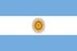
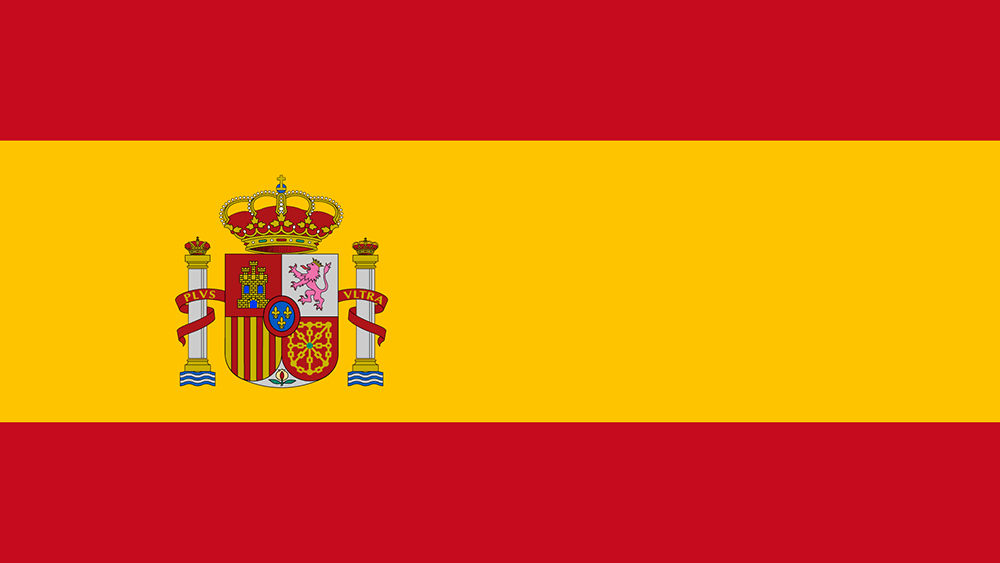
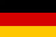
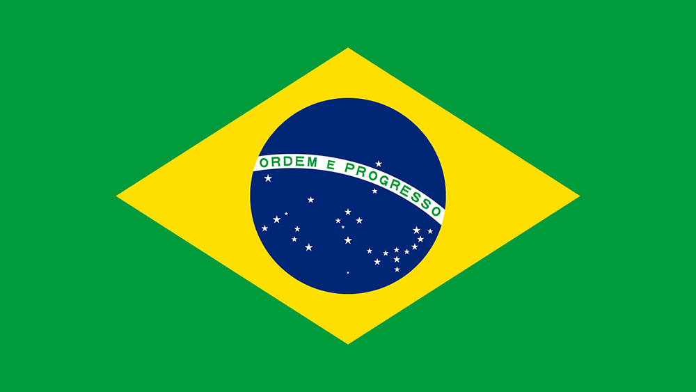
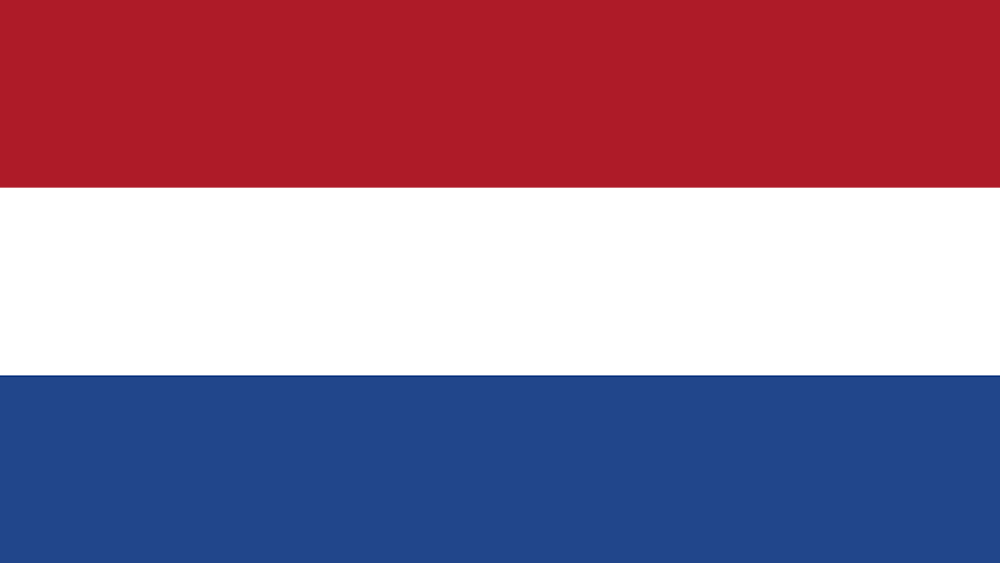

EQUIPES
BWT Alpine Formula One Team
Alpine pode ser um nome relativamente novo na Fórmula 1, mas a famosa divisão de carros esportivos da Renault tem muita tradição no automobilismo. A reformulação da equipe em 2021 marcou o próximo passo no renascimento da Renault na F1, iniciado em 2016 com a aquisição da então Lotus. Vencedores de corridas com sua nova identidade, pódios regulares e uma disputa pelo título devem ser o próximo alvo...
Base
Enstone, Reino UnidoChefe de Equipe
Flávio BriatoreCarro
A525Pilotos
Pierre Gasly
Franco Colapinto 
Aston Martin Aramco Formula One Team
A incursão original da Aston Martin na Fórmula 1 – há mais de meio século – durou apenas cinco corridas. Desta vez, porém, é sério. Esta equipe de F1 não é estranha ao sucesso, tendo vencido com sua identidade original, a Jordan, e mais recentemente como Racing Point, em 2020. Reconhecida por sua capacidade de superar as expectativas, e agora com um bicampeão liderando sua dupla de pilotos – e o designer mais famoso da F1 chegando a bordo em 2025 – a Aston Martin é uma equipe para ficar de olho…
Base
Silverstone, Reino UnidoChefe de Equipe
Andy CowellCarro
AMR25Pilotos
Lance Stroll
Fernando Alonso 
Scuderia Ferrari HP
Para muitos, a Ferrari e a Fórmula 1 tornaram-se inseparáveis. Única equipe a competir em todas as temporadas desde o início do campeonato mundial, a Prancing Horse cresceu do humilde sonho do fundador Enzo Ferrari para se tornar uma das marcas mais icônicas e reconhecidas do mundo. O sucesso veio rapidamente com nomes como Alberto Ascari e John Surtees, e continuou – em tempos difíceis – com Niki Lauda na década de 1970 e Michael Schumacher na década de 2000, quando a Ferrari conquistou cinco títulos consecutivos, um feito inédito na época, consolidando seu status como a equipe mais bem-sucedida e condecorada da história da F1...
Base
Maranello, ItáliaChefe de Equipe
Frédéric VasseurCarro
SF-25Pilotos
Charles LeclercLewis Hamilton

MoneyGram Haas F1 Team
A equipe mais jovem do grid, a Haas, estreou de forma impressionante em 2016 e, no processo, tornou-se a primeira equipe de F1 liderada exclusivamente por americanos em três décadas. Fundada pelo industrialista Gene Haas, a equipe está sediada nos Estados Unidos, nas mesmas instalações de Kannapolis, Carolina do Norte, onde sua equipe campeã da NASCAR Sprint Cup Series, a Stewart-Haas Racing, também está sediada. A equipe com motores Ferrari também possui uma fábrica no Reino Unido, em Banbury…
Base
Kannapolis, Estados UnidosChefe de Equipe
Ayao KomatsuCarro
VF-25Pilotos
Esteban Ocon
Oliver Bearman
Stake F1 Team Kick Sauber
Após ter obtido sucesso considerável no automobilismo mundial, onde ajudou a desenvolver os talentos emergentes das futuras estrelas da F1 Michael Schumacher e Heinz-Harald Frentzen, Peter Sauber guiou sua equipe homônima para a F1 em 1993. Desde então, a equipe se estabeleceu como um pilar do grid, tornando-se vencedora de corridas sob a breve propriedade da BMW e desenvolvendo uma merecida reputação não apenas por produzir carros competitivos, mas também por desenvolver jovens pilotos. Nas últimas temporadas, eles correram sob o nome Alfa Romeo - e em 2026 se tornarão a equipe de fábrica da Audi - mas desde 2024 um novo patrocinador principal trouxe uma nova identidade para a famosa equipe suíça.
Base
Hinwil, SuíçaChefe de Equipe
Jonathan WheatleyCarro
C45Pilotos
Nico Hulkenberg Gabriel Bortoleto 
Mclaren Formula 1 Team
Desde que entrou no esporte em 1966, sob a orientação e o esforço incansável do fundador homônimo Bruce, o sucesso da McLaren tem sido nada menos que de tirar o fôlego. Cinco décadas brilhantes renderam inúmeras vitórias, pole positions e pódios, sem mencionar nove campeonatos de construtores. Além disso, alguns dos maiores pilotos do esporte fizeram seus nomes com a equipe, incluindo Emerson Fittipaldi, Ayrton Senna, Mika Hakkinen e Lewis Hamilton...
Base
Woking, Reino UnidoChefe de Equipe
Andréa StellaCarro
MCL39Pilotos
Lando Norris
Oscar Piastri

Mercedes-AMG PETRONAS Formula One Team
O renascimento da Mercedes na F1 moderna começou com a criação de uma equipe de fábrica em 2010 – a plataforma para uma ascensão meteórica na classificação dos Grandes Prêmios. A equipe gerou enorme entusiasmo desde o início com o retorno sensacional de Michael Schumacher, mas logo as manchetes na pista: três pódios em sua temporada de estreia, todos com Nico Rosberg – que então conquistou uma dupla pole/vitória na China em 2012. Na temporada seguinte, ele foi companheiro de equipe de Lewis Hamilton, e a dupla protagonizou algumas batalhas épicas pelo título, enquanto as Flechas de Prata varriam tudo à sua frente para se tornarem uma das forças mais dominantes da era moderna da F1 – até a Red Bull chegar e roubar a coroa. No entanto, com o consagrado vencedor George Russell agora em parceria com a estrela em ascensão Kimi Antonelli, a Mercedes continua sendo uma das equipes a serem batidas…
Base
Brackley, Reino UnidoChefe de Equipe
Toto WolffCarro
W16Pilotos
George Russell
Kimi Antonelli

| Visa Cash App Racing Bulls Formula One Team
Criada em 2006 como uma equipe na qual jovens pilotos do prodigioso grupo de talentos da Red Bull podiam dar os primeiros passos na F1, a Racing Bulls – originalmente chamada Toro Rosso, depois AlphaTauri e, por fim, RB – foi formada a partir das cinzas da corajosa equipe Minardi. Sebastian Vettel validou a abordagem quase imediatamente, conquistando uma vitória de conto de fadas em 2008, antes de conquistar o título mundial com a equipe-mãe, a Red Bull Racing. Hoje, o espírito de cultivar talentos ainda se mantém, embora a equipe italiana não seja mais apenas uma "equipe B", mas uma construtora por direito próprio...
Base
Faenza, ItáliaChefe de Equipe
Laurent MekiesCarro
VCARB02Pilotos
Liam Lawson
Isack Hadjar

| Oracle Red Bull Racing
A Red Bull já conhecia a F1 – como patrocinadora – antes de entrar formalmente como equipe de fábrica em 2004. Mesmo assim, a escala de seu sucesso na década seguinte foi impressionante. Após um primeiro pódio em 2006, a equipe atingiu seu auge em 2009, conquistando seis vitórias e o segundo lugar no campeonato de construtores. Nas quatro temporadas seguintes, a equipe foi um verdadeiro tour de force, conquistando títulos duplos consecutivos entre 2010 e 2013, com Sebastian Vettel emergindo como o mais jovem tetracampeão da categoria. Agora, eles estão recapturando essa glória com um talento igualmente empolgante – um chamado Max Verstappen…
Base
Milton Keynes, Reino UnidoChefe de Equipe
Christian HornerCarro
RB21Pilotos
Max Verstappen Yuki Tsunoda

| Atlassian Williams Racing
Impulsionada pelo brilhantismo e pela paixão do falecido Sir Frank Williams, a Williams cresceu de origens humildes para se tornar um gigante da Fórmula 1, inigualável por todos, exceto Ferrari e McLaren, em termos de sucesso duradouro. Nas últimas quatro décadas, a equipe acumulou vitórias em Grandes Prêmios e glórias em campeonatos, e, no processo, nutriu alguns dos maiores talentos do esporte, tanto dentro quanto fora do cockpit. E, após a decisão da família Williams de se afastar após a venda da equipe para a Dorilton Capital em 2020, uma nova era começou...
Base
Grove, Reino UnidoChefe de Equipe
James VowlesCarro
FW47Pilotos
Alex Albon
Carlos Sainz